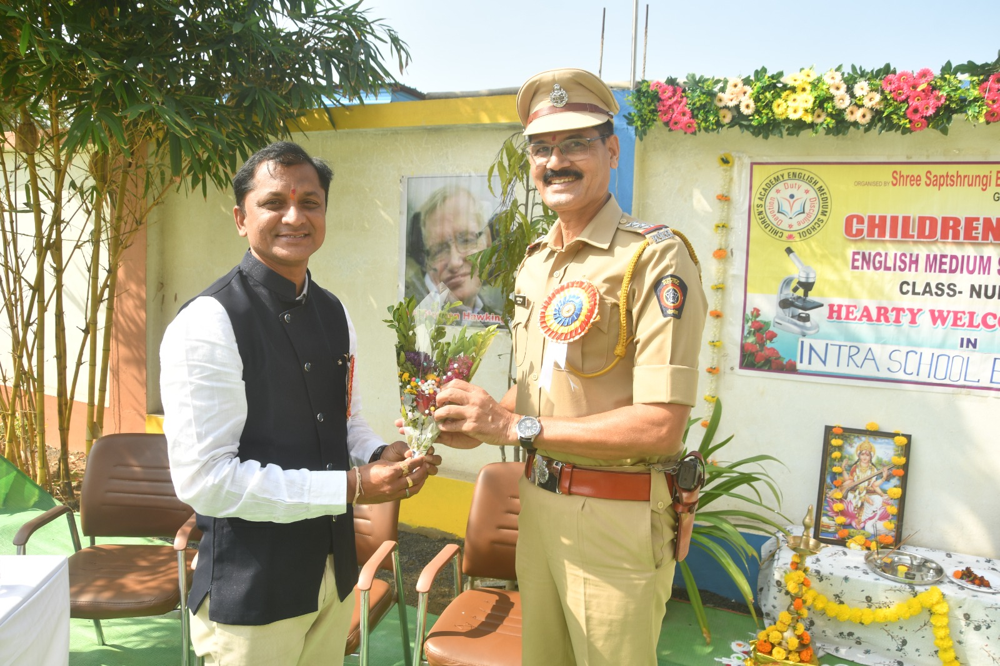
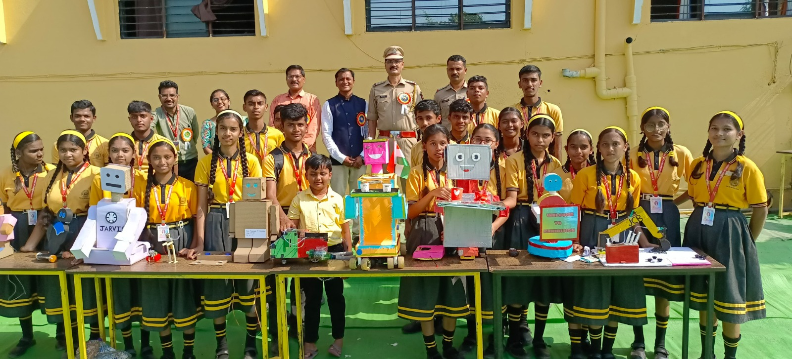
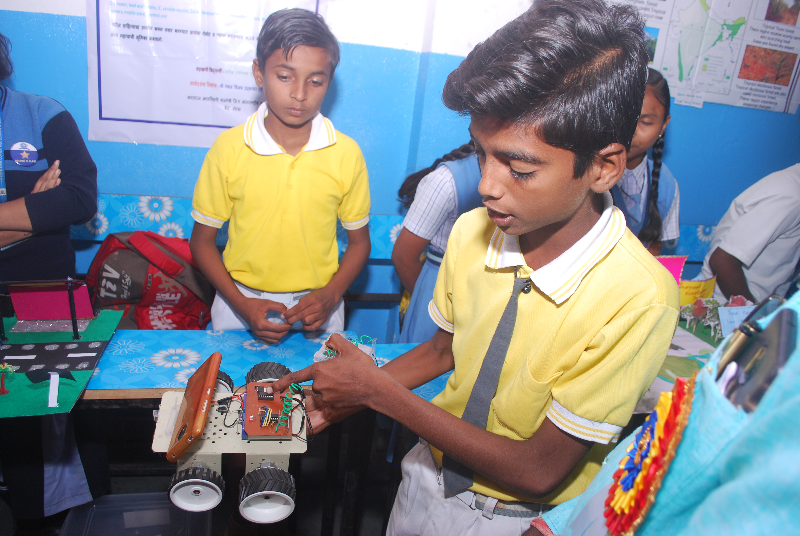
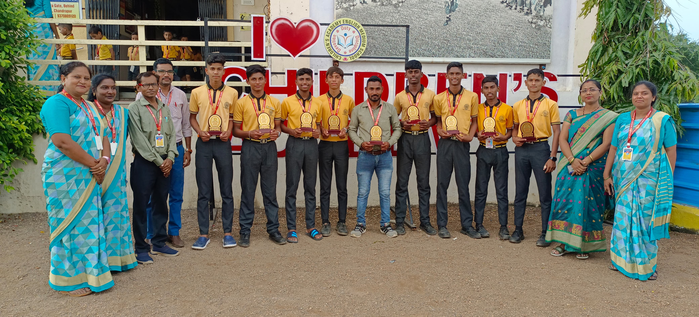
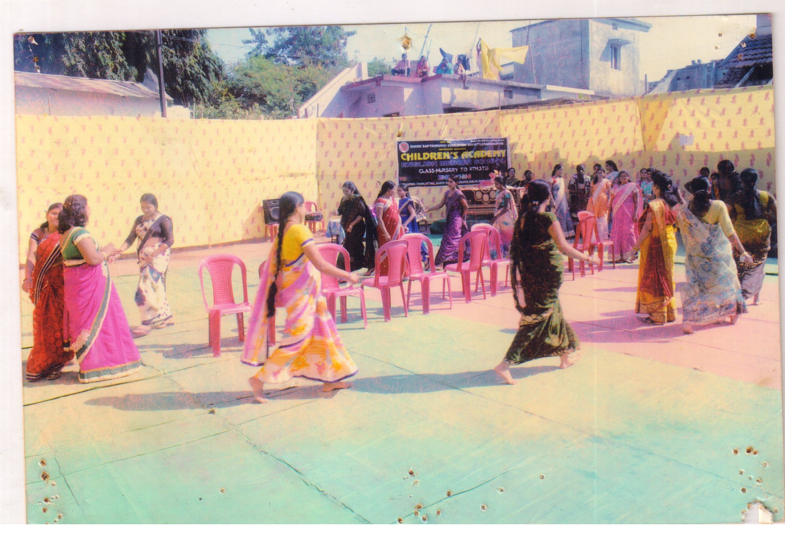
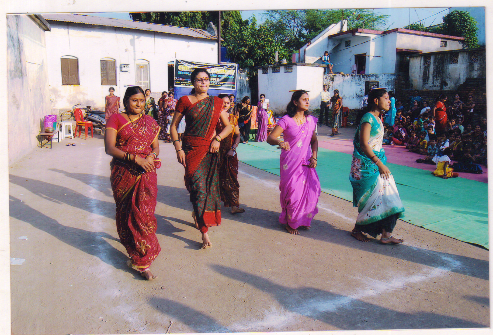
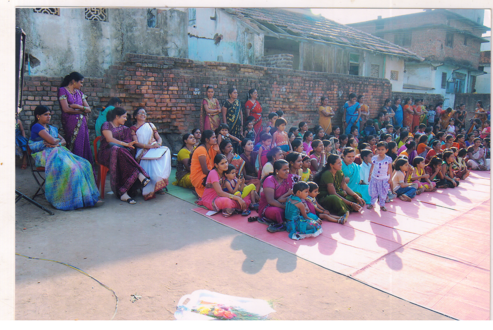

Educational, social, cultural, women empowerment and training programmes, family dispute resolution, about agriculture, water conservation, felicitation of disabled by giving them financial support, tree plantation, National festival, training in organic farming, computer education, Arrangement of various sport competitions, games, vocational training, career guidance, cleanliness drive, cleanliness awareness,various programmes based on Indian culture, help to the senior citizens, health check up, free Eye testing , Guidance on health issue, legal advice,
educational awareness, road safety, women's protection, seminars on competitive exam, career guidance programme, establishment of Happy village like activities and programme have been carrying out regularly by our institute. The needy gets benefit from all above mentioned schemes

Children’s Academy English Medium School is one of the best school in Chandrapur and well known for its quality education. Shree Saptshrungi Education Society has been carrying out various educational programmes since 2002 from its establishment. Our school is from Nursery to Class 10th.


The main objective of this school is to give good quality education to the students who belongs to deprived section of society and those parents who want to give good education to their Children but due to economical condition they are unable to give good quality education, school helps to these parents and students for getting education in English medium in minimum budget. Our school is providing all physical facilities, big and well equipped school infrastructure along with highly qualified teachers.
To create awareness and liking in study various educational activities has been carrying out by the school. School is giving education in traditional way with play way method. In todays world there is lack of open space, playgrounds to play, C.A.E.M. school is providing big playground to the students to play and for their physical development we arrange various sport competition for all students. Many students have been selected in district and state level sport competition. Abacus classes also have been started in school thinking about modernization we have started robotic education for students.


To promote allround development and to create awareness about our culture various cultural programmes have been arranged by our school. We celebrated Death anniversaries and birth anniversaries of great leaders. All students take part in all national festivals. We teach environment awareness, tree plantation, cleanliness, respects to the elders and parents, secularism, discipline, politeness sympathy, cooperation among the students. About 15000 students took education and some students are working in different field. Some students are doctors, engineers, civil servants, lawyers, bank officers, C.A. and selected in navy also.
School providing education to the illiterate people under the scheme of continuing education policy run by Maharashtra government. To provide self employment to women and to become self dependent women’s training programmes also held in our school. We arrange various programmes for the students like career guidance seminar, computer education, self employment, etc.


Shree Saptshrungi Education Society, Chandrapur regularly conducts business training, employment guidance for youth and unemployed men and women, career guidance seminars and competitive examination guidance camps for students. Today it is impossible to get government jobs so many men and women have not get employment or job even after completing their education. So today's young generation is going towards despair. .

In such a situation, this young generation is given business training by the organization so that this young generation can create their own business and earn a living for themselves and their families.To the educated in various fields are guided on how to create employment and which employment to choose. .

Career guidance seminars are always conducted for the students from class VIII to graduation to guide about which method of education to pursue and which method of employment to take in future. Also, the students are awakened for the competitive examination from class 5th onwards, so that the students get interested in the competitive examination and the fear of the competitive examination disappears in their minds, the institute regularly organizes the competitive examination guidance camp.
Organizing various games and matches.

Various games and matches are regularly organized by Shree Saptshrungi Education Society Chandrapur. In today's modern era, students and young generation are busy using mobile phones and watching TV. Also, due to increasing urbanization, playgrounds have become extinct in the city. Today, the young generation and students are addicted to mobile phones, so their health is at risk.

Also the young generation is suffering from various diseases and the importance of sports is decreasing day by day, in such a situation various sports are organized regularly by the organization to create awareness about sports and the benefits of sports to the students and youth.

Various benefits of sports are explained Various sports matches are organized to create interest in sports among students and youth. Students played from the organization are gaining proficiency in district level as well as state level sports. Everyone in the society should tell the importance of sports to today's generation and make them aware about sports.

.JPG)
.JPG)